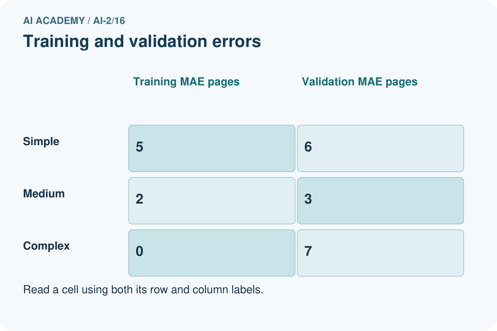
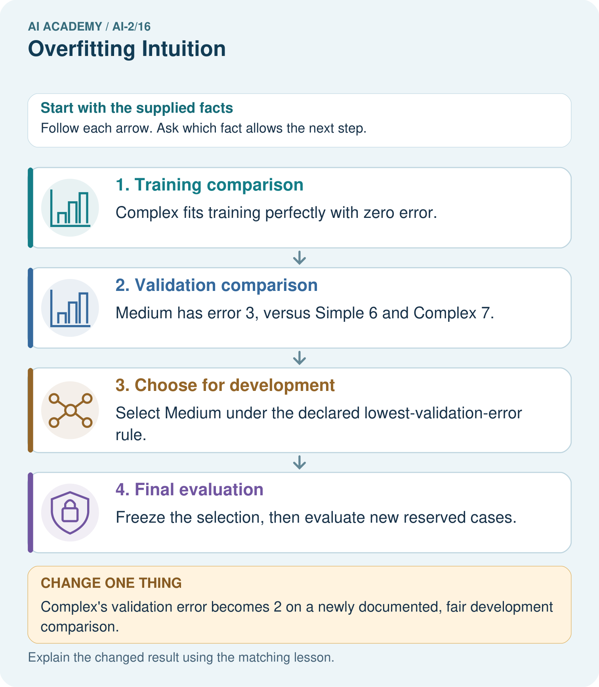
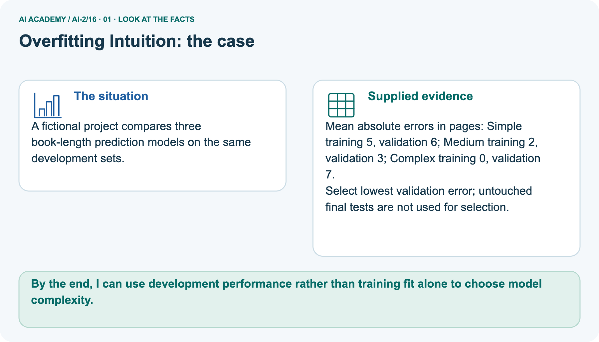
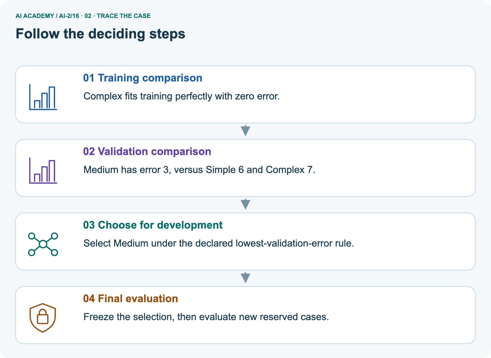
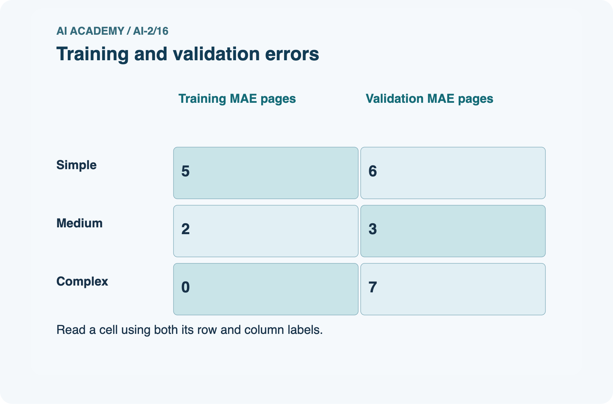
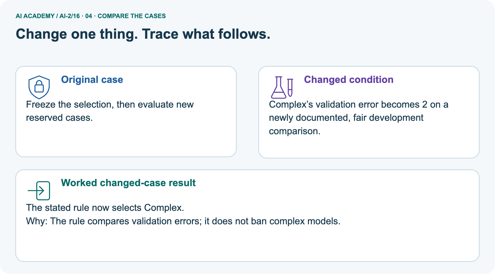
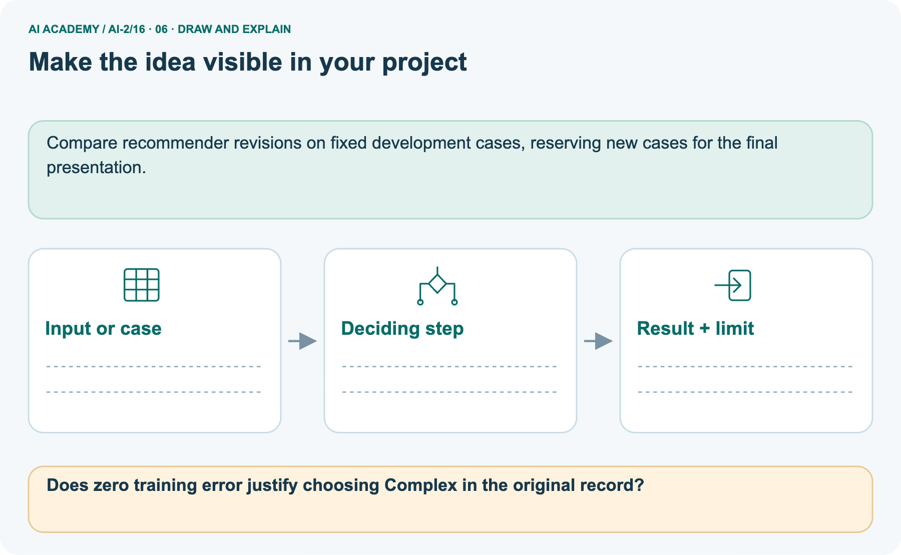

AI Academy · Level 2 · Grade 7 · Week 16 · Workbook
Overfitting Intuition
Learn to understand, design, build, test and explain AI systems responsibly.
Project: Transparent Book Recommender
Workbook · 1 of 21
Recall and choose your starting point
Record your starting explanation for Overfitting Intuition before opening notes. Show any later correction separately.
Try the recall before opening notes. Then use a different colour or a labelled second line to correct your explanation.
Choose Informative Questions
Without opening the old lesson, explain one key idea from Choose Informative Questions. Give an example and a mistake that the idea helps you avoid.
Types of Classification Error
Without opening the old lesson, explain one key idea from Types of Classification Error. Give an example and a mistake that the idea helps you avoid.
Human Classifier Simulation
Without opening the old lesson, explain one key idea from Human Classifier Simulation. Give an example and a mistake that the idea helps you avoid.
Workbook · 2 of 21
Practise with fading help
Complete the supported Overfitting Intuition trace and record the first step you can explain without help.
Use W2: Interpret a gap for Overfitting and model capacity. Record the answer once; the lesson and workbook refer to the same attempt.
| Given inputs | Procedure I chose | Middle steps | Result and check |
|---|---|---|---|
Workbook · 3 of 21
Individual reasoning check
Check the proposed Overfitting Intuition explanation against the supplied facts before discussing it.
Use the worked case for Overfitting and model capacity. Proposed explanation: “A final answer is enough”. Decide whether this explanation is supported.
Point to the step or supplied fact that decides; explain your repair if needed.
Workbook · 4 of 21
Independent transfer case
Write one first attempt at the reserved independent case before feedback. Repeated copies of that case refer to the same recorded attempt.
Independent case: Apply independently
Models A training 4 validation 5, B training 1 validation 2, C training 0 validation 2. Lowest validation MAE then simpler; B is simpler than C. Choose and justify.
Attempt this case before feedback. Record any help. Earlier examples below are further practice; a case already practised with feedback cannot establish fresh transfer.
Workbook · 5 of 21
Your learning target
Connect the Overfitting Intuition target to a trace and a justified conclusion.
Rule A memorises eight training IDs and gets 8/8 training, 2/8 validation. Rule B uses genre and gets 6/8 training, 6/8 validation. Which is preferable on this evidence, and what test remains?
Workbook · 6 of 21
Solve the given case
Solve the supplied Overfitting Intuition case and show the deciding evidence.
Rule A memorises six training book names. It scores 6/6 familiar and 2/6 new. Rule B uses relevant traits but is untested.
What does the evidence support?
Show your trace, calculation or evidence
Workbook · 7 of 21
Check a changed case
Apply the procedure to the changed case and record why the conclusion follows.
Rule A memorises six training book IDs. Rule B uses a relevant topic feature. Why might A fail on a new ID? What test is needed?
My independent answer and reason
Week 16 Test and reflect
Workbook · 8 of 21
Design a revealing test
Specify a changed input, expected result and observation separately.
Create a changed input, boundary case or missing-information case. Write the expected answer or safe response before testing.
| Test record | My evidence |
|---|---|
| Changed input or condition | |
| Expected answer or fallback | |
| Observed result | |
| Why the result occurred |
Workbook · 9 of 21
Project checkpoint
Justify what Overfitting Intuition adds to Transparent Book Recommender and keep the evidence.
Avoid title-by-title patches; improve features or thresholds that transfer.
The project change and evidence I will keep
Workbook · 10 of 21
Self check
Judge explanation, evidence, transfer and limits separately; attach the work behind your judgement.
- I can explain the mechanism.
- I can show evidence.
- I can handle a changed case.
- I can name a limit.
Mark each as not yet, with help or independently, and attach supporting work.
Teacher review ____________________ Next step ____________________
Workbook · 11 of 21
Transfer practice from the original programme
Use this earlier case as transfer practice. A case already discussed with feedback is not fresh assessment evidence.
Rule A memorises eight training IDs and gets 8/8 training, 2/8 validation. Rule B uses genre and gets 6/8 training, 6/8 validation. Which is preferable on this evidence, and what test remains?
Record support used: none, hint or teacher explanation.
Workbook · 12 of 21
W1 Select from evidence
Select from evidence. Apply the supplied Overfitting Intuition facts and keep your reasoning.
Choose among the three worked candidates and explain the training trap.
Workbook · 13 of 21
W2 Interpret a gap
Interpret a gap. Apply the supplied Overfitting Intuition facts and keep your reasoning.
Does a training-validation gap alone prove overfitting?
Workbook · 14 of 21
W3 Propose a controlled change
Propose a controlled change. Apply the supplied Overfitting Intuition facts and keep your reasoning.
Describe one fair next development comparison.
Workbook · 15 of 21
W4 Apply independently
Attempt before feedback. If this repeats the selected independent case, reuse that first attempt; otherwise keep a separate record. Apply independently. Apply the supplied Overfitting Intuition facts and keep your reasoning.
Models A training 4 validation 5, B training 1 validation 2, C training 0 validation 2. Lowest validation MAE then simpler; B is simpler than C. Choose and justify.
Workbook · 16 of 21
W5 Limit a diagnosis
Limit a diagnosis. Apply the supplied Overfitting Intuition facts and keep your reasoning.
What extra evidence would you inspect before concluding a model memorized noise?
Workbook · 17 of 21
Feedback, return check and learning record
Record the first repaired step and a different case to revisit after a delay.
| Evidence | My record |
|---|---|
| Worked alone / hint / model | |
| First step I repaired and why | |
| New case checked later; date and result | |
| What I can now explain without notes | |
| One remaining question |
Revisit this idea with your teacher after a delay. Familiarity is different from explaining and using it on a changed case.
Workbook · 18 of 21
Pictorial case practice: Overfitting Intuition
A fictional project compares three book-length prediction models on the same development sets. Explain the labelled step before checking the changed condition.
A fictional project compares three book-length prediction models on the same development sets.
Mean absolute errors in pages: Simple training 5, validation 6; Medium training 2, validation 3; Complex training 0, validation 7.
Select lowest validation error; untouched final tests are not used for selection.


Does zero training error justify choosing Complex in the original record?
Record the help used
Support used: alone / hint / worked example. This record is practice evidence.
Project connection: Compare recommender revisions on fixed development cases, reserving new cases for the final presentation.
Workbook · 19 of 21
Project portfolio milestone
Keep this week’s input, deciding step, result and limit together in the Transparent Book Recommender record.
Project: Transparent Book Recommender
Current milestone: Test changed cases. Keep normal, boundary and failure cases; compare expected and observed results.
Compare recommender revisions on fixed development cases, reserving new cases for the final presentation.
| Evidence to keep | My record |
|---|---|
| This week’s input and deciding step | |
| Prediction and actual result (or labelled paper trace) | |
| One change since the previous checkpoint and why | |
| One error or limit and the next test |
Workbook · 20 of 21
Supported practice and learning evidence
Try the supported questions before comparing with hints and feedback. Record what you repaired and the evidence you retained.
Use this supported practice once, in the browser or on paper. Keep the reserved independent assessment for a separate first attempt before teacher feedback.
A fictional project compares three book-length prediction models on the same development sets.
Practice 1: explain the deciding evidence
Which labelled step matches this detail? Freeze the selection, then evaluate new reserved cases.
1. Final evaluation
2. Training comparison
3. Choose for development
4. Validation comparison
Hint · try first
Hint if needed: Read the steps in the pictorial case. Match the supplied detail to the stage that performs or records it.
Feedback · compare after trying
After your attempt, compare with the supported explanation: Final evaluation Freeze the selection, then evaluate new reserved cases. A flexible model can fit quirks of its training set without predicting new examples well.
Here Complex’s training success occur togethers with the worst validation error. The numbers are invented comparisons, not a claim that complexity always hurts.
Choosing Medium uses development evidence; its validation score must not be advertised as an untouched final-test result.
Practice 2: explain the deciding evidence
Changed case · predict first
Changed-case practice: Complex’s validation error becomes 2 on a newly documented, fair development comparison. Which conclusion is supported by the supplied facts?
1. We can decide the result without examining the changed input or the procedure.
2. This one example guarantees correct results for every future input.
3. The stated rule now selects Complex.
Hint · try first
Hint if needed: Use the changed condition and the deciding step in the pictorial trace. The answer must say what follows from those facts.
Feedback · compare after trying
After your attempt, compare with the supported explanation: The stated rule now selects Complex. The rule compares validation errors; it does not ban complex models.
Repair a missing building block
Review Choose Informative Questions (ai-2/15). Goal: Fit a root question and leaf predictions from training examples. Short practice: Choose the best original question and explain why its more balanced split matters here..
Return to this week and explain what you changed.
Review Types of Classification Error (ai-2/13). Goal: Build a labelled confusion matrix from matched reference and prediction pairs. Short practice: Which error causes a sound book to be sent for unnecessary repair review?.
Return to this week and explain what you changed.
Review Human Classifier Simulation (ai-2/10). Goal: Construct a classifier with a stated input format, selected rule and recorded output.
Short practice: Why are J and M initially treated differently even though both are illustrated mysteries?. Return to this week and explain what you changed.
Keep your completed work
Use Download completed work in the hosted lesson to export your answers, reflections, practice feedback and code-run evidence. Open the HTML copy to read or print it.
Drafts stay in this browser when storage is available; clear drafts on a shared device.
Workbook · 21 of 21
Visual concept journey
Explain each Overfitting Intuition picture from its labels, then record a relevant limit.
01. Overfitting Intuition: the case

A fictional project compares three book-length prediction models on the same development sets.
Supplied facts: Mean absolute errors in pages: Simple training 5, validation 6; Medium training 2, validation 3; Complex training 0, validation 7.
Select lowest validation error; untouched final tests are not used for selection.
Point to the given fact that matters most. Explain why it matters.
02. Follow the deciding steps

Training comparison: Complex fits training perfectly with zero error. → Validation comparison: Medium has error 3, versus Simple 6 and Complex 7. → Choose for development: Select Medium under the declared lowest-validation-error rule. → Final evaluation: Freeze the selection, then evaluate new reserved cases.
Point to each numbered stage and explain which recorded input it uses.
03. Training and validation errors

Training and validation errors. Simple: Training MAE pages = 5, Validation MAE pages = 6. Medium: Training MAE pages = 2, Validation MAE pages = 3. Complex: Training MAE pages = 0, Validation MAE pages = 7.
Read the labels and values. Explain the relationship the model shows.
04. Change one thing. Trace what follows.

Original case: Freeze the selection, then evaluate new reserved cases. Changed condition: Complex’s validation error becomes 2 on a newly documented, fair development comparison.
Expected result: The stated rule now selects Complex. Reason: The rule compares validation errors; it does not ban complex models.
Predict before checking the worked changed-case result. Name what changed and what the supplied facts allow you to conclude.
05. Connect the explanation to its limit

A flexible model can fit quirks of its training set without predicting new examples well. Here Complex’s training success occur togethers with the worst validation error.
The numbers are invented comparisons, not a claim that complexity always hurts. Choosing Medium uses development evidence; its validation score must not be advertised as an untouched final-test result.
Limit: A single small validation set may be noisy; selection evidence does not prove future population performance.
Explain the case, then point to a limit on the claim.
06. Make the idea visible in your project

Compare recommender revisions on fixed development cases, reserving new cases for the final presentation. Draw your input, deciding step, result and limit.
Supported question: Does zero training error justify choosing Complex in the original record?
Draw your project trace and justify the deciding step using evidence.